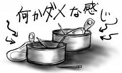

昨日までは、プログラムでトラブルが出てその解析で慌ただしい日々を送っていましたが、それも今日ひょんなことであっさり解決をみて、一気に暇人へと転身してしまいました。
暇なら、まあ今日は早く帰ろうと思い立ち、とっとと退勤したはいいのですが、そのまま家にまっすぐ帰るのもつまらないなぁとフラフラしていたところ、気が付いたら大宮の大地に降り立っていました。フラフラしながらも物欲の炎を心に灯していたのがいけなかったようです。ウッカリウッカリ(確信犯)。
大宮でパチンコ屋の前を通り過ぎると、ユーロビートが大音量で鳴り響く中、ネクタイしめた大量のお父さん達がしかめ面をしながら台をにらみ付けているのが目に入り、なんだか世の中って本気でつまらないなぁと思えてきて、一気に意気消沈。足取りもうつむきがちに。しかし、そんな時こそ物欲なのです(復活&倍)！
思えば中学時代、部活(なんとバスケ部だヨ！←万年補欠の補欠(補欠のネストが一段深い))でハードな練習をこなした後なのに、本(富士見とか角川のカッコイイやつ)がどうしても欲しくて、隣町の本屋まで自転車を漕いで行くという無茶な物欲駆動の生活を送っていました。普通なら男子中学生、性欲の方へ行ってもよさそうなのに駆動方向は常に物欲でした。あまりに間違った青春だったと思いますが、今日のことを思うと実はあまり改善されていません。
というわけで、Adobe Photoshop Elements 2.0 を普通に購入。ようやくMacOSX対応です。これでClassic環境ともおサラバなのかぁ!?という感じで意気揚々と帰宅したのですが、Photoshop 4から一気にここまで飛んで来た(Elements2.0はPhotoshop 7ベースです)身には、いろいろなところが変わりまくっていてとまどいました。Photoshop 4にはなかった無限undoが、結構な頻度でディスクアクセスするので、とてもじゃないけどタブレットで絵を描くにはパフォーマンスが追い付きません。僕のPowerBookG4/400の無力さを買ってから初めて思い知りました。一気に意気消沈。意気も絶え絶え。
会社の階段をへぼへぼと下っていると、階下から登ってくる女性二人組が目にとまりました。階段に虫の死骸が落ちていたらしく、慌てて飛び退きながら「ビックリした〜」「蛾だよ〜」などと言い合っているのです。
すれ違いざまに確認したところ、それは蛾じゃなくて、どう見てもカゲロウなのでした。人生がウスバカゲロウの僕としては、そこのところキチンとしていただきたい、と思いました(感情移入しすぎ)。というか普通間違えない。
同期が旅行に行って来たらしく、部署におみやげとして栗を甘く煮たもの(何と言うかよく知らない)の缶詰が置かれていました。みんなで開封して爪楊枝を刺して食べていたのですが、僕の爪楊枝が栗の急所を直撃！缶詰の中でバラバラに砕けた栗の破片を一個ずつ爪楊枝ですくいあげながら食べる羽目になり、かなり恥ずかしい思いをしました。
その缶詰は焼き鳥やホタテの缶詰と同サイズだったので、みんなが食べ終わった跡が、まるでツマミを持ち寄って宴会でもしたかのような酔いどれ雰囲気を漂わせており、真面目なはずの仕事空間に、突如出現したダメダメ空間という感じがとても愉快でした。そんなこと考えていたのは僕だけだと思いますが。

今日は(ようやく)雨戸を開けました。そのままでは洗濯物が干せないことに気付いたからです(本気で遅い)。
でも、平日の睡眠不足を惰眠で補っていたため、洗濯物を干してもすぐに日が暮れてしまいました。むなしいものだなぁ。
ようやく、飛浩隆『グラン・ヴァカンス』(早川Jコレクション)を手に入れました。最近ちょっと積ん読が多いのですが、まぁなんとかなるでしょう。
最近は、夜遅くに帰ってくる→夜更かしする→朝ぎりぎりまで寝てる、という悪の循環系で生活しているので、台風の日以来、雨戸が閉まったままになっています。
部屋の雨戸は引き下げ型のシャッター方式になっているので結構やかましいのです。帰宅する時間には、既に周りの部屋の住人が就寝中なので、さすがにそんな時間にガラガラと開けるのはためらわれます。朝はギリギリまで寝ているので飛び出して行かないと間に合わないため、シャッター雨戸を開け放つ時間が取れません。
でも、「これはこれで本やCDが日焼けせずにすむのでいいなぁ」という考えが頭をよぎるあたり、終わっている気がします。太陽すら拒絶する男。とかいうと格好いいのになぁ(気のせい)。
昨日の台風は一人で大はしゃぎしながら雨戸を閉めたり、玄関をちょっと開けて外を覗いてその狂乱を味わったりしました。雨が水の塊となってものすごい勢いで移動していくので見ていて飽きません。気が付いたら吹き込んで来た雨で靴が濡れてたよ(阿呆)。
今日は地下300mでの作業はありませんでした(9月下旬の日記参照)。昨日掘り当てたトラブルを自分で調査する羽目に陥ったためです。これこそマッチポンプだ！Da Pomp！
でも、よくよく考えてみると、調査と言っても、穴を掘っていたら出られなくなり、必死で抜け出そうとして額に汗をするような間抜け事態だし、掘りやすいゆるゆるの地盤を作ったのはそもそも僕ではないので、マッチポンプとは違います。いろいろぬかるみに足を取られがちで、調査中、マシンのHDDがお亡くなりになったりしました(ドクロ)。再インストールで一日中！(ファミコンウォーズの節で)
今日は生まれて初めての経験をしました。何かと言うと一人でファミレスに入ったのです。まぁ、あの人、一人で座ってるわ。一人でファミリーだなんて。くすくす。鼻毛もあんなに飛び出して。みたいな自意識過剰らしい被害妄想でもって頑なに一人入店を拒否してきた僕ですが、なんかつい出来心です(全然頑なじゃない)。
終始うつむきがちでメニューをチョイス。やってきたボンゴレスパゲティのアサリは、全てが砂入りでした。まさに砂を噛むような人生だと思いました。
おまけ: